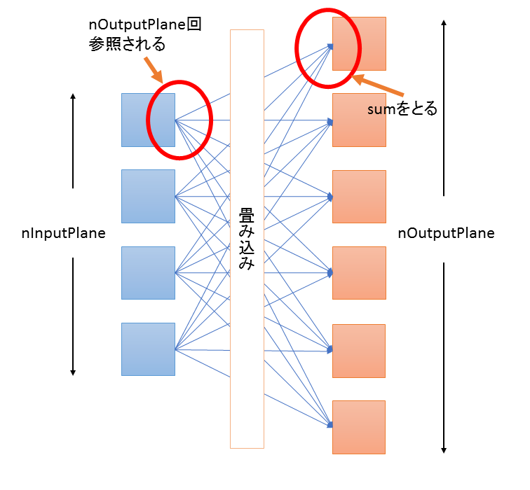
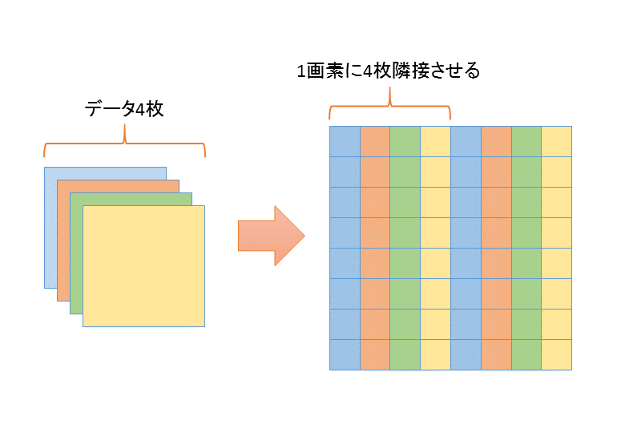

目次
経緯 : http://d.hatena.ne.jp/w_o/20150602#1433229756
なんか社内チャットで
https://github.com/WL-Amigo/waifu2x-converter-cpp
をはやくしろというメッセージを受信したのでやった。
まあそれなりに頑張ったのでまとめておく
今の waifu2x のパラメータ(カーネル3x3、平面数32の倍数)に依存したチューニングをしている部分もあるが、 カーネルサイズが小さいCNNなら同じような考えかたを適用できるのではないかと思う
今の実装の効率はhttp://d.hatena.ne.jp/w_o/20150616#1434392833にあるとおり。
自分では確認できていないが、CUDA版はKeplerが効率悪くて、Fermi、Maxwellなら30〜40%程度の効率らしい。
OpenCV が少し使える程度の画像処理知識と、 SSE、CUDA、OpenCL の最適化マニュアルそれぞれ少し読んだことある程度の知識があるという気持ちで書いてます。SIMDの書きかたとかコアレスアクセスとかは説明しないです。
具体的には、OpenCVのfilter2Dかそれ相当の処理を真面目に最適化できるぐらいの知識があるとよいです。
まずは処理を理解する。Hector Martinさんの https://marcan.st/transf/waifu2x.py を読むのがいいのではないかな。
どれかの実装を少し動かせばわかるが、処理時間のほぼ全てがこれの convolve2d で費やされている。今のwaifu2xのパラメータではこれのカーネルは全て3x3になっている。つまり、「3x3 の 2d convolve を高速化する」という問題だとわかる。
3x3 の 2d convolve は、単体で最適化してもメモリ律速してしまって、演算性能をフルに出すことはむずかしい。
3x3 2d convolve は以下のような処理で、
for (int yi=0; yi<height; yi++) {
for (int xi=0; xii<width; xi++) {
out[yi][xi] = in[yi-1][xi-1] * kernel[0] +
in[yi-1][xi ] * kernel[1] +
in[yi-1][xi+1] * kernel[2] +
in[yi ][xi-1] * kernel[3] +
in[yi ][xi ] * kernel[4] +
in[yi ][xi+1] * kernel[5] +
in[yi+1][xi-1] * kernel[6] +
in[yi+1][xi ] * kernel[7] +
in[yi+1][xi+1] * kernel[8];
}
}
素朴な実装では、9回ロード1回ストアのメモリアクセス10回とfmaが9回で、メモリ:演算比は、10:9。 まーブロッキングして再利用をすれば、理論上 2:9 まで上げられるが、今のGPUは メモリ:演算比は、1:50 とか 1:100 ぐらいまで上げたいところで、 それには全然足りない。
(例えば、GTX 980Ti だと、https://en.wikipedia.org/wiki/List_of_Nvidia_graphics_processing_units によると、メモリ336[GB/s] = 単精度floatなら 84[G要素/s]、5632[GFLOP/s]なので2816[GFMA/s]で、最低でもメモリ:演算比 1:34 まで上げないと演算効率100%は実現できない。)
というわけで、convolve2d 単体で性能を出すのはむずかしく、もう少し上のレベルのループからチューニングしないといけないということがわかる。
というわけでどうすればいいか、だが、
for step in model:
assert step["nInputPlane"] == len(planes)
assert step["nOutputPlane"] == len(step["weight"]) == len(step["bias"])
o_planes = []
for bias, weights in zip(step["bias"], step["weight"]):
partial = None
for ip, kernel in zip(planes, weights):
p = signal.convolve2d(ip, np.float32(kernel), "valid")
if partial is None:
partial = p
else:
partial += p
progress += 1
sys.stderr.write("\r%.1f%%..." % (100 * progress / float(count)))
partial += np.float32(bias)
o_planes.append(partial)
planes = [np.maximum(p, 0) + 0.1 * np.minimum(p, 0) for p in o_planes]
waifu2x.py の処理を眺めていると、入力データ(この場合はip) は、複数回参照されていることがわかると思う。
CNN は、図に示すと以下のような処理で

図1. NNの説明にありがちな図
各イテレーションごとに、nInputPlane個の入力とnOutputPlane個の出力があって、nInputPlane個の入力は、それぞれnOutputPlane回参照される、というようになっている。
for (op=0; op<nOutputPlane; op++) {
for (ip=0; ip<nInputPlane; ip++) {
for (yi=0; yi<height; yi++) {
for (xi=0; xi<width; xi++) {
float sum = 0;
sum += kernel(planes[ip][yi][xi], weight[ip][op]); // planes[ip] は nOutputPlane 回参照される
}
o_planes[op][yi][xi] += sum;
}
}
o_palnes[op] = ReLU(o_planes[op]);
}
waifu2xでは、一番ヘビーなイテレーションでは、nInputPlane=128、nOutputPlane=128 となっており、入力データは128回アクセスされる。 これの各アクセスで一個のデータが9回演算されるので、waifu2x のメモリ演算比は、1回ロード、1回ストア、9*128(=1152)回演算で、1:576 が理論値だということがわかる。実際にはレジスタやL1キャッシュは容量が小さいので理論値は出せないが、90%無駄にしても1:57で、これならGPUでも性能が出そうだというように見える。
以上を踏まえてループを以下のように書きかえる。
for (yi=0; yi<height; yi++) {
for (xi=0; xi<width; xi++) {
float sum[nOutputPlanes] = {0};
for (ip=0; ip<nInputPlane; ip++) {
for (op=0; op<nOutputPlane; op++) {
sum[op] += kernel(planes[ip][yi][xi], weight[ip][op]);
}
}
for (op=0; op<nOutputPlane; op++) {
o_planes[op][yi][xi] = ReLU(sum[op]);
}
}
}
もとのループでは op, ip, yi, xi の順だったが、 yi, xi, ip, op の順に書きかえている。カーネルの係数 weight のサイズは、画像サイズに依存せず、(nInputPlane x nOutputPlane x 9 x sizeof(float)) [byte] 固定なので、サイズがデータと比べると小さく、内側二重ループをキャッシュ内で回すことができる。
というわけで書きかえたのが https://github.com/tanakamura/waifu2x-converter-cpp/blob/19a18e5b9021dd4b80b3a5e6ce5e96cdda83c9eb/src/modelHandler.cpp これ。
@WL_Amigo さんのもとの実装ではOpenCVのfilter2D()を使っていて、これはSSE化されているので、この段階ではまだ遅いのだが、 僕の実装はFMA版、OpenCL版、CUDA版、全てこれを基本にしているので、以下の文章をちゃんと読もうという人は、このコードを理解しておいてもらえると助かる。
これをhttps://github.com/tanakamura/waifu2x-converter-cpp/commit/7cce3a5f77f8860a9dbcfec4786be1ff6de6c81a#diff-d8745e174c791e6563dcc5e134353d6fR117 さくーっとFMA化して、filter2D版11.38[sec] → FMA版3.83[sec] になった、と書いてた。
次に、このループにあうようにデータを並びかえる。今は複数枚ある入力配列からバラバラに読んで、出力配列にバラバラに書いてるが、 これは結構無駄が多い。 コードだと、 https://github.com/tanakamura/waifu2x-converter-cpp/blob/eb4d55f92eb8547d8c78f0d132e73750d4e624d4/src/modelHandler.cpp#L183 このへん。
一個の配列の要素の中にプレーンが隣に並ぶようにデータをならびかえる。

図2. データのならびかえ
はいスッキリした。https://github.com/tanakamura/waifu2x-converter-cpp/blob/f6d5d7bc4fcef26c1d5eb633597fbc36bae33b96/src/modelHandler.cpp#L167 これで、3.83[sec] → 2.6[sec] に改善。
もとの計画では、2日実装、1日まとめ書いて終わるという計画だった。 ここまで1日で実装できて、ほぼ計画どおりだったのだけど、さてまとめを書こうか、というところで @logicmachine が https://github.com/logicmachine/waifu2x-opt を、出してきた。これが僕の実装より30%ぐらい速くてこの状態でまとめ書いても、 「他の実装より30%も遅い実装のまとめ(笑)」みたいな状態になってしまって、まとめを書いてる場合ではなくなった。
さらに同じぐらいのタイミングで、@mhhpnvu さんが waifu2x-caffe(https://github.com/lltcggie/waifu2x-caffe) を出してきて、これがGPUを使った場合に、僕の物より5〜10倍ぐらい速い実装だったので、「他の実装より10倍遅い実装のまとめ(笑)」感がさらに高まり、もはや実装したのを公言するのもつらい状況になってしまった。
(というかそもそもオリジナルのwaifu2xがTorch7を使っていて、これはCUDA対応しているのだから、それを一回でも動かしていれば既にそれなりに速いCUDA版が出ていることは確認できたはずなので、完全に事前調査が足りてなかったのだが。まあfilter2D()の高速化とわかった時点で事前調査必要無いと判断してしまった部分はある。まあでも1日でそこまで調べるのは無理だったかな…このfilter2Dをくりかえす処理がCNNの一般的な処理だと知ったのはここから2日後だったので)
というわけで、2日で実装を終える計画は実現不可能となって、ここから
float v00 = in[y-1][x-1]; float v01 = in[y-1][x ]; float v02 = in[y-1][x+1]; float v10 = in[y ][x-1]; float v11 = in[y ][x ]; float v12 = in[y ][x+1]; float v20 = in[y+1][x-1]; float v21 = in[y+1][x ]; float v22 = in[y+1][x+1];
みたいなコードを書いては捨て書いては捨てる二週間がはじまるのだった…(一日5回以上書いてたし合計100回ぐらい書いたと思う)
最終的には、waifu2x-opt がi7-4700MQ で 960x540 を 1920x1080にしたときに 14.8[sec] で僕の実装が、7.9[sec]ぐらいに、 waifu2x-caffe が、GeForce GTX 765M で同じく960x540 を入れたときに4.3[sec]で、僕の実装が4.4[sec]ぐらいになっている。
まあwaifu2x-caffeに微妙に負けているが、自分では確認できていないけど、どうも僕の実装は Kepler(sm3x) ではあんまり良くなくて、Fermi(sm2x)、Maxwell(sm5x) では効率1.5倍くらいになるらしくて(750Ti, 980, 550Ti いずれもKeplerの効率22%よりかなり良い)、まあそれなら僕のほうが速いのではないかな…速いといいな…(願望)
@logicmachine 版 waifu2x-opt は、僕の実装と違ってデータの並びかえをしないで、convolve2d を関数レベルでチューニングしているので、今時のCPUでキャッシュをケアしてデータ構造変えるとこのぐらい変わるというデータとしては面白いのではないかなと思う。 まあ実装のしかたやコンパイラによって+-20%ぐらいするので、14.8[sec]と7.9[sec]の違いの全てがデータ構造の影響かはわからないけど、 @logicmachine はもう時間かけてもほとんど変わらないみたいなことを言っていたので、細かい実装レベルのチューンではもうそんな変わらないと思う。 あとキャッシュだけでなくて、僕のバージョンはロードしたデータのシフトが必要無い点も大きいかなと思う。
以下が waifu2x-opt に負けないようにしたこまチューン(細かいチューニング)になる
1, 2 を適用して @logicmachine 版に追い付いて、そこからGCC利用分で速くなった感じだったと思う。
waifu2x では、処理は7ステップあって、最初と最後はメモリ律速で演算量も処理時間大したことないのだけど、まあ、最後はFMA化してなくてなんか微妙に足をひっぱっていたので、それをFMA 化した。(https://github.com/tanakamura/waifu2x-converter-cpp/blob/dc8c0163dd83ec78dd04a2d68d92d9964f59102d/src/modelHandler_avx_func.hpp#L264)
AVXはアラインあんまり気にしないでよいのだけど、ほんとに気にしなさすぎて簡単にアラインメント取れるやつもアラインするのを忘れていた。10%か20%ぐらい目に見えて変わった気がする。
僕はいつもGCC使うのでVCで狙ったコードを出すのに慣れてないのだけど、やっぱり悲しいコードが出ていた。
FMA版最内ループは、https://github.com/tanakamura/waifu2x-converter-cpp/blob/dc8c0163dd83ec78dd04a2d68d92d9964f59102d/src/modelHandler_avx_func.hpp#L77 ここで、GCCでレジスタ14個(AVX版は15個) に入るようにチューンしたのだけど、VC は何故かこのレジスタギリギリのコードをスケジューリングして、
vmovups ymm2, YMMWORD PTR [rax-288] vmovups ymm6, YMMWORD PTR [rdx-288] vmovups ymm1, YMMWORD PTR [r15-288] vmovups ymm7, YMMWORD PTR [r8-288] vmovups ymm8, YMMWORD PTR [r9-288] vmovups ymm9, YMMWORD PTR [r10-288] vmovups ymm10, YMMWORD PTR [rsi-288] vmovups ymm11, YMMWORD PTR [r14-288] vmovups ymm3, YMMWORD PTR [r12-288] vmovups ymm12, ymm1 vmovups ymm0, ymm13 vfmadd231ps ymm0, ymm2, YMMWORD PTR i00$1$[rbp] vfmadd231ps ymm0, ymm6, ymm14 vfmadd231ps ymm0, ymm7, YMMWORD PTR i02$1$[rbp] vfmadd231ps ymm0, ymm8, YMMWORD PTR i10$1$[rbp] vfmadd231ps ymm0, ymm9, ymm15 vfmadd231ps ymm0, ymm10, YMMWORD PTR i12$1$[rbp] vfmadd231ps ymm0, ymm11, YMMWORD PTR i20$1$[rbp] vfmadd231ps ymm0, ymm1, YMMWORD PTR i21$1$[rbp]
レジスタスピルしちゃうのだった。つらい。
vmovups 32(%rax), %ymm13 movl %ecx, %r8d addq $576, %rax vmovups -576(%rax), %ymm12 salq $2, %r8 vmovups (%rsp), %ymm14 leaq (%r11,%r8), %r10 addq %rbx, %r8 vfmadd132ps %ymm12, %ymm6, %ymm14 vfmadd132ps %ymm0, %ymm6, %ymm12 vfmadd231ps %ymm0, %ymm13, %ymm14 vfmadd231ps %ymm3, %ymm13, %ymm12 vmovups -512(%rax), %ymm13 vmovups (%r10), %ymm15 vfmadd231ps %ymm3, %ymm13, %ymm14 vfmadd231ps %ymm9, %ymm13, %ymm12 vmovups -480(%rax), %ymm13 vfmadd231ps %ymm7, %ymm13, %ymm14 vfmadd231ps %ymm1, %ymm13, %ymm12 vmovups -448(%rax), %ymm13 vfmadd231ps %ymm1, %ymm13, %ymm14 vfmadd231ps %ymm4, %ymm13, %ymm12 vmovups -416(%rax), %ymm13 vfmadd231ps %ymm4, %ymm13, %ymm14 vfmadd231ps %ymm10, %ymm13, %ymm12 vmovups -384(%rax), %ymm13 vfmadd231ps %ymm8, %ymm13, %ymm14 vfmadd231ps %ymm2, %ymm13, %ymm12 vmovups -352(%rax), %ymm13 vfmadd231ps %ymm2, %ymm13, %ymm14 vfmadd231ps %ymm5, %ymm13, %ymm12 vmovups -320(%rax), %ymm13 vfmadd231ps %ymm5, %ymm13, %ymm14 vfmadd231ps %ymm11, %ymm13, %ymm12 vmovups (%r8), %ymm13 vaddps %ymm14, %ymm15, %ymm14 vaddps %ymm12, %ymm13, %ymm12 vmovups %ymm14, (%r10) vmovups %ymm12, (%r8)
はいGCCなら完璧。VC 11.3[sec]、GCC 7.9[sec] ぐらい違う。
OpenCV は VC ならバイナリにライブラリ含まれてるのだけど、GCC は含まれてないのでビルド手順複雑になるからあんまやりたくなかったのだけど…(だからABIが複雑なC++はダメなんだよ…ブツブツ)
http://d.hatena.ne.jp/w_o/20150609#1433854645 カルペル環境下で遅いというのがあったのでスレッドプールにした。まあ会社の環境カスペル切れないので、境界条件ちゃんと調べたわけではないが、まあ大体の問題はカスペル先生のせいなので多分先生が悪いと思う。
現代のOSでは新規にスレッド作ってもオーバーヘッド200usecぐらいなので無理してスレッドプール作らなくてもいいのだけど、カスペル環境下ではそうではないのだ。現代でもスレッド生成は超ヘビーで、だからカスペル環境下ではCygwinとかがクッッッッッソ遅くなってしまうのだった。
まあカスペル先生いなくても一応スレッド生成コストちょっと減ってるはずなので、小さい画像入れたときの時間はちょっと良くなってるのではないかな…
waifu2x-caffe が出たことによって、FMA版の速度ではあんまり存在理由が無くなってしまったので waifu2x-caffe には無い機能をなんか作る必要が出てきた。なので考えたのが二点、
ライブラリインターフェースは、まあ作ればできるので、OpenCL版について解説する
まあ解説すると言っても結構気合いでやったのであんまり書くこと無いのだけど…
https://github.com/tanakamura/waifu2x-converter-cpp/blob/master/src/modelHandler_OpenCL.cl
見た目にはわかりづらいが、基本的にはFMA版と同じ構造をしている。
違っている点は以下のとおり
waifu2xではip, opの数は32,64,128のいずれかなので、ワークアイテムで分けるのに都合が良い。まあ32の場合は半分無駄になるけど、その場合の処理はそれほど処理時間大きくないので無視。
ip と op のどちらを分けるかだが、この処理では、opを分けている。opで分けると、アイテム間でsumをとる必要が無い。
なお、AMD GPU では、CU あたり最低でも512アイテムぐらい起動しないと性能が出ない。理論値としては、256アイテム入れれば出るのだけど、
コンパイラは浮動小数演算を全くスケジューリングしないようで、平気で依存する fmac を連続して並べてくる。
なので、fmacのレイテンシ(多分5以上)を埋めるために、256の2,3倍ぐらいのアイテム数を投入する必要がある。
(この説明はおかしいという情報をもらった。あんまり信用しないで。
ただ、色々動かした手ごたえとしては、GCN では 256 item で性能をフルに出すのは難しいというような感触だった)
CodeXL を使って、CUあたり、128ワークアイテム、4以上のワークグループになるように調整している。 (CodeXLはこのリソース消費の可視化についてはグラフを出してくれてどのぐらい減らせばよいのかがわかりやすくて nvvp よりも見やすいという気がした)
FMA版では、x方向2回アンロールだったが、GPU版は8回アンロールしている。 これは以下の理由による。
なんか色々試行錯誤したので忘れたけど、まあ8回アンロールは必須みたいなぐらいの違いがあったと思う
どっか に書いた
具体的には https://github.com/tanakamura/waifu2x-converter-cpp/commit/364095cacc9d76114ed0764e4485358dcaa34e15 このへん。
涙ぐましい努力の跡を感じて欲しい。記録残ってないけど結構目に見えて変わったはず。
R9 290X とかの廃人GPUを使っていると初期化コストが無視できない感じになっていたので、 OpenCL のビルド時間を減らすためにビルドしたバイナリを残すようにした。
https://github.com/tanakamura/waifu2x-converter-cpp/commit/34c7da472d0569925dd2c390a2f4d8ab91c0594c このへん。多分数百[msec]ぐらい変わる。
(TODO : http://d.hatena.ne.jp/w_o/20150609#1433793191 について。あとで書く…と思ったがコードを紛失している気がする。コードが見つかったら書く)
以上で、OpenCL版は、同等クラスのGPUで caffe 版相当の効率を実現するという目的は達成したはず。GPU部分で効率45%、pngの読み書き含めた全体で効率35%はまあ悪くないと思う。(良いというほどでもないけど)
まあ、チューニングし終えたOpenCL版があるなら CUDA 版を作るのもすぐだと思ったので、ついでにCUDA版もつくることにした。
CUDA版とOpenCL版の違いは以下
OpenCL版とは別にCUDA版を作った理由は、cuCtxSetCacheConfig(or cudaFuncSetCacheConfig) が OpenCLでは使えないから。
今の実装ではレイテンシの隠蔽をスレッド数に頼っていて、十分な数のスレッドが起動されていないと性能が出ない。 今の実装では、sharedをブロックあたり16KB弱使っていて、そのままでは十分なスレッド数を確保できないという状態だった。
手元のGPUはsm_30だったのだけど、sm_30ではL1Dキャッシュはほぼ使いみちなくて死んでるので、shared を 48KB に変更する必要があった。
どっか にも書いたけど、GeForceでは、メモリアクセスのオペランドでレジスタに乗ったアドレス加算できず、定数オフセットが付けられるだけだった。これはつまり、
a[i * 4] = 100;
と、
a[32 * 4] = 100;
では、命令数が大分変わるという意味になる。
これを改善するために、nInputPlanes, nOutputPlane をテンプレート化して、アドレス加算が最小化されるようにした。
CUDA 実装は AMD GPU 実装のほぼコピペで済ますつもりだったのだけど、予想に反してあまり良い成果が出なかった。
waifu2x では、7つのステップがあって、1→6にかけて処理が重くなっていき、7が処理が少ないみたいな感じになっている。
GPU なら、処理が重いほうが効率が良くなる場合が多いのだけど、何故か 3 step 目が一番効率良くて300GFLOPSぐらい、、時間のかかる6,7step はその半分の150GFLOPSぐらいしか出ていなかった。
まあこれは実際には妥当な値だ。というのは、3step目は、nInputPlane=32, nOutputPlane=64 で、これなら sizeof(weight)=72KBで中級GPUのL2キャッシュ(128KB〜256KB)に入る。一方、6step目は、nInputPlane=128,nOutputPlane=128 で、sizeof(wegith)=576KBになり、L2には入らない。 weight は、最内ループでロードしているため、3step目と、6step目は、「最内ループでL2から読むかGDDRから読むか」という違いが出る。
このweightへのアクセスは、ループごとに全領域に対してシーケンシャルにアクセスしており、単純なLRUキャッシュでは、ループごとにキャッシュスラッシングが発生する。(むしろ、AMD GPUでこれが問題にならないほうが不思議な感じがする)
というわけでこれに対応した。
CUDAカーネル呼び出し一回で処理する量を、nInputPlane=32, nOutputPlane=64に制限し、このCUDAカーネルを計8回呼び出す。 こうすると、一個のCUDAカーネル内の全SMで参照する weight の範囲を72KBに制限できる。(GeForceのL2キャッシュは、全SM共有なので、全SMでアクセスする領域を同じにする必要がある)
コードは
CUDAカーネルを呼び出しているホスト側に一部ループを追い出して、そこから複数回CUDAカーネルを呼び出す。
これによって、step6, step7 の処理が重い部分も倍ぐらい速くなって 300GFLOPS になった。
楽しかったのでよかった(こなみ)。
まあ重要なのは適切な速度比較対象を見つけるという点だと思う
最初の2日実装計画では、FMA版は256x256 を入力としたとき 2.6[sec]で満足していて、そしてもうできることはあまり無いと思っていたのだよね。
ところが今の実装では、同じ条件なら1.5[sec]まで縮んでいる。
これは2.6[sec]の実装より速い waifu2x-opt があったから、もっと努力したわけで、waifu2x-opt が無かったらFMA版はまだ2.6[sec]のままだったのではないかな。
また、逆に、事前調査完璧にして、いきなり速すぎる実装を知ってしまっていたら多分やっていなかったと思う。
僕の中で、CUDAのチューニングで世界一だと思っているのが、 maxas を作った人なのだけど、 この人も CNN の実装をやっているのだよね。(というかCNNの実装のためにmaxasを作ったのかもしれない)
もし、maxasの作者の Scott さんが既に速い実装を作ってるとはじめに知ってたら、どうせ僕には勝てないことは確定してるので、そもそもやってなかったと思う。
なので、事前調査を完全に怠って、適度に僕の実装より速い waifu2x-opt,waifu2x-caffe が出てきて、最後にNervanaSystemsの実装を知るというコースを偶然にもたどったことによって、まあ、それなりに楽しい作業になったのではないかなと思う。
まあ僕はもう満足したのでやらないけど…やる気があったらやっていたかもしれない点は
とかになるのではないかな。